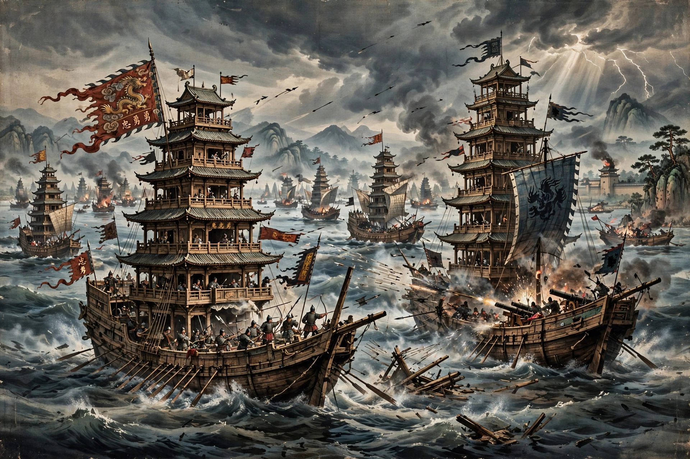

The Battle of Lake Poyang (鄱陽湖之戰) was a naval conflict fought from 30 August to 4 October 1363 between the rebel forces of Zhu Yuanzhang and Chen Youliang during the Red Turban Rebellions against the Mongol-led Yuan dynasty. It is claimed to be one of the largest naval battles in history, and its outcome decided who would supplant the Yuan and found the Ming dynasty.
 | |
| Date | 30 August – 4 October 1363 |
|---|---|
| Location | Lake Poyang, Jiangxi, China |
| Result | Decisive Zhu Yuanzhang victory; death of Chen Youliang |
| Belligerents | Zhu Yuanzhang's forces vs. Chen Han (Chen Youliang) |
By 1363 the two most powerful Red Turban warlords were Chen Youliang, who had proclaimed the state of Han and held the middle Yangtze, and Zhu Yuanzhang, based at Nanjing (Yingtian) downstream. Chen sailed a huge fleet — including enormous multi-decked tower ships — down the Yangtze and besieged Zhu's ally at Nanchang. Zhu led a relief force to Lake Poyang, China's largest freshwater lake, where the fleets met.
Chen's fleet is said to have numbered some 600,000 men against Zhu's roughly 200,000 (figures from later histories are likely exaggerated). Zhu's smaller, more manoeuvrable ships used fire ships and gunpowder weapons against Chen's chained tower ships with devastating effect. After weeks of fighting and a blockade of the lake's outlet, Chen Youliang was killed — reportedly by an arrow — while trying to break out, and his fleet surrendered.
The victory eliminated Zhu's strongest rival. In 1364 Zhu declared himself Prince of Wu, absorbed Chen's territories, went on to defeat Zhang Shicheng, and in 1368 proclaimed the Ming dynasty as the Hongwu Emperor, expelling the Yuan court to the north.
From Wikipedia, the free encyclopedia.